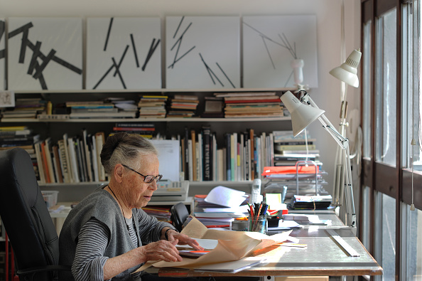

Vera Molnar

Vera Molnar in ihrem Atelier, Paris, 23. Mai 2011 © Catherine Panchout - Corbis
Vera Molnar wird 1924 in Budapest geboren. Schon als Kind entwickelt sie eine sehr klare, auf das Wesentliche reduzierte Bildsprache. Ihre kindliche Darstellung des Plattensees bei Sonnenuntergang beschreibt sie so:
»Es waren vier pastellfarbene Querstreifen. Grün die Wiese, die zum See abfiel, blaugrün der See, grüngrau die Hügel auf der anderen Seite, blau der Himmel. Über dem grün-grauen Band ein rundes, rotes Gebilde: die untergehende Sonne.«
Den Rat ihrer Mutter, ein paar Bäume in den Vordergrund zu malen, weist sie empört zurück. 1947, nachdem sie ihr Studium der Malerei, Kunstgeschichte und Ästhetik an der Budapester Kunstakademie beendet hat, geht sie mit ihrem Mann François nach Paris, wo sie bis heute lebt. Vera Molnar gilt als Pionierin der Computerkunst. 1959, noch bevor sie auf einen Computer zurückgreifen kann, entwickelt sie eine Technik, die Sie Machine imaginaire nennt: